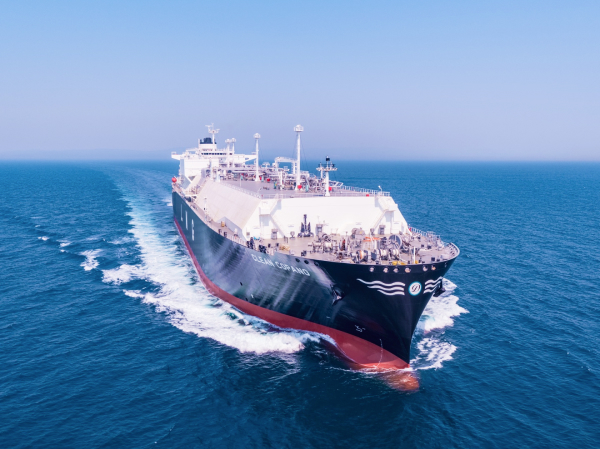

> 사업분야 > 조선
조선
Shipbuilding business
조선사업
고기술·고부가가치선 시장을 선도하고 있습니다

- 조선사업
- 1995년 국내 최초로 셔틀탱커를 건조한 이래 전세계에서 발주된 셔틀탱커 136척 가운데 64척을 수주해 시장 점유율 47%를 장악하며 압도적인 품질 경쟁력을 입증하고 있습니다. 08년 세계 최대 크기인 266,200㎥의 LNG선을 2011년에는 국내 업계 최초 멤브레인형 LNG선 화물창을 독자 개발하여 LNG선 건조 경쟁력을 끌어 올렸습니다. 13년 이후에는 혁신적으로 개선한 '친환경 고효율 엔진 LNG선'을 건조 14년에는 세계 최초로 에탄운반선을 수주하며 앞선 기술을 선보이고 있습니다.
제품 소개
글로벌 삼성중공업의 조선 제품 소개입니다.